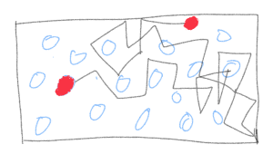
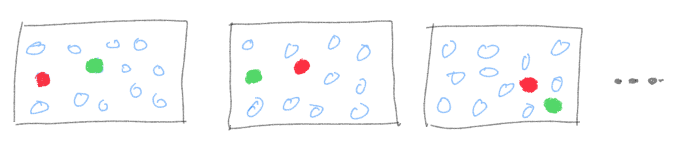

Ensembles: Part I
Caveats:
In all of the subsequent posts in this publication, on occasion, I will need to use diagrams and figures. Most of the time, I will be relying on hand-drawn doodles instead of fancy diagrams and animations. For the most part, they will be enough for an intuitive understanding of the concepts. Making fancy diagrams and animations is a time-consuming and challenging project in itself and I don’t want to go down that rabbit hole and let it detract me from the main purpose of this publication.
These posts are written for learners who are unfamiliar or vaguely familiar with physics concepts used in ML/DL/AI. For that reason, my aim is primarily to impart an intuitive understanding and not technical exactness. On occasion, I will make statements that are generally true but with caveats and conditions. I will progressively refine those statements once a certain foundation has been established.
Typically, any data science or machine learning course or program starts with supervised and unsupervised learning and topics like regression, clustering, and decision trees, to name a few. These methods, while being technical and mathematical, are not that difficult to understand intuitively. Logistic regression is a way to split your data into different classes. Clustering also groups the data into different clusters based on different criteria. Decision Trees (DT) are somewhat flow-charty way of doing what we do all the time— arrive at a decision based on answers to Yes/No type questions for various factors and conditions.
Decision Trees and extension of DT, Random Forests (RF), is where we suddenly encounter the unfamiliar concept of an ensemble. We also have concepts like bagging, boosting, voting, stacking, etc. This concept of ensemble is everywhere in machine learning and AI. In a certain sense, we make use of it when we split the data into training-validation-testing, making batches of our data, introducing noise in a systematic way in images, image augmentation, and many more situations.
So, in this post and the follow-up post (Part II), I will talk about:
What exactly is an ensemble? Why do we need ensembles? What does it have to do with physics? When is this concept used purely for statistical reasons and when does a bit of physics sneak in.
Dictionary definition of the word “ensemble” is just a collection or a group of items. In a way, that is how it is used in sciences as well as ML/AI, except with some caveats. In the examples mentioned above, I have briefly stated how ensembles are used in ML. I will describe how they are used in physics in this post. To do that, and explore other related concepts in forthcoming posts, I will make use of the classic “gas-in-a-box” example. It is a simple enough system to intuitively understand most of the statistical mechanics.

Consider this box filled with molecules of a gas. Even without any fancy theories, we know that we always only see it spread throughout the box. If we saw that all of the gas collected itself in some corner, we would consider it as bizarre or spooky! More on that and its connection to entropy will be in subsequent posts. For now, let’s focus on how do we make this observation quantitative. Let us assume that all the atoms or molecules of the gas are identical— nothing distinguishes them from each other. So if we swap two of them, the “state” of the system doesn’t change.
The “state” of the system has to be clarified further. Statistical mechanics is the foundational theory of thermodynamics. In thermodynamics, we measure global or “macro” variables like temperature, pressure, volume, etc., usually at the boundaries of the system. A set of specific values of such variables would be the “macro-state” of the system. Now, once we make the box, the volume is fixed unless we start messing with the walls. Let’s say we keep the whole box in some temperature-controlled environment, so that the temperature is also fixed at some value. For simple modeling purposes, if we assume that the gas is made up of tiny particles bouncing around, then it turns out that temperature is connected to the kinetic energy of the particles, summed and averaged. Kinetic energy depends on the velocity of the particle (assuming that the mass m is constant).
\(E = \dfrac{1}{2}mv^2 = \dfrac{3}{2}kT\)
At any time, a micro-state of the system is given by the position and velocity of every single particle. It is not difficult to imagine that if we want the temperature to be some fixed value T, that can be achieved by a gazillion different combinations of velocities. If one particle has high velocity, it can be compensated by another particle with low velocity to maintain the average. Each such combination of positions and velocities of particles of the gas is a “micro-state” of the system.
The important point is, many micro-states will produce the same value of the macro variable. In principle, the entire gas trapped in some corner leaving most of the box empty is a perfectly valid micro-state that produces the same temperature. Yet, we don’t see that happening spontaneously, ever! We will explore why that is later with the concept of entropy. For now, let’s return to how we could make quantitative measurements to verify this picture.
There are two main approaches:

The first one is to pick a particle, any particle, since none of them are special, and follow (track) the particle for a long time; i.e measure its position at tiny time intervals, calculate its velocity from its location at two successive times, calculate the energy and find the average over time. This would amount to creating a time series for a particle. From this accompanying doodle it is not that outlandish to imagine that if we track this particle long enough, it will eventually visit all parts of the box somewhat “democratically”, with no particular preference for some locations. We can extend this to tracking more than just one particle and get even more accurate information. In essence, we are investigating the time evolution of a micro-state of the system and finding time-averages of micro-state variables like the velocity of the particle.
The second approach is the one that involves ensembles. The logic behind it, is that at any time, the system is frozen in some particular configuration. There isn’t anything particularly special about that configuration, so another slightly different configuration is also a good representative of the global state of the system. A single configuration is like a snapshot and a whole stack of such snapshots, each slightly different from each other, each conforming to the same macro variable values, creates what we call an ensemble. Instead of tracking a particle over time, we can study a large number of snapshots of the system, and calculate averages over the entire ensemble.

A fundamental result of statistical mechanics is that if the system is ergodic in nature, time average method give the same results as the ensemble average method when the system is in equilibrium with its surroundings. This is called the ergodic hypothesis and systems that follow this are called ergodic systems. When exactly does this happen? The exact treatment of this difficult mathematical concept is beyond this post, but roughly speaking, when a system can access all parts of the phase space (positions and velocities)— no regions are inaccessible. This is the main reason why ensemble method works, at least for simple well-defined systems at equilibrium, because what happens to a system over long time is also captured by looking at different realizations of the system (ensemble).
There are two main types of systems; one that evolves with time and another that is purely statistical or probabilistic in nature, where time is irrelevant. A gas in a box, until it reaches equilibrium, is a system that evolves in time. For a coin toss done hundreds of times, time is not relevant. The properties of systems like that are based on how many outcomes are possible, which outcome occurs at every trial, and how many times each outcome occurs. For systems that don’t involve time evolution, ensemble approach is the natural choice. In systems involving time, it may not always be possible to observe it for incredibly long time periods. The ensemble approach allows us to figure out the most likely behavior. Essentially, it is a powerful approach for both types of systems.
For systems in physics, the ensemble approach is used typically when there are some global variables kept constant and some allowed to change. Depending on that, we get different ensembles. For the same “gas-in-a-box” situation, we get canonical ensemble if the Temperature (T) is kept fixed and the system is allowed to exchange heat with a heat bath. At equilibrium, the system will have the same temperature as the heat bath. Number of particles (N) and Volume (V) are the other variables. There are other types of ensembles depending on whether total energy (E) is kept constant, volume is kept constant but N and E are allowed to change, pressure (P) is kept constant etc. The bottom line is in physical and chemical systems, ensemble method works best if the system is in equilibrium with its environment with some variables kept constant and some other variables allowed to vary, giving rise to a large number of micro-states that correspond to the macro-state at equilibrium.
The question then arises whether all of these micro-states are equally important or not. Depending on which type of ensemble we are dealing with, each micro-state is assigned a weight or a probability of occurring. For example, in canonical ensemble, the probability of each micro-state is given by P = exp((F - E)/kT). E is the total energy, F is the “free energy”, k is the Boltzmann constant and T is the temperature. The important point is the probabilities are an exponential function, not the same for every micro-state. This and some other calculations allow us to calculate what are the most probable micro-states; those are the states we will see pretty much always, even though bizarre states like the entire gas crowding in a corner are technically possible. The probability of such micro-states showing up is exceedingly low.
This was just the bare bones basics of the concept of ensembles as used in thermodynamics and statistical mechanics of systems in equilibrium. Needless to say, the formalism has been extended to account for many other complicated scenarios in many branches of physics and chemistry and even systems that are not at equilibrium, via non-equilibrium thermodynamics (some ideas from it go into generative AI).
In the next post, Part II on Ensembles, I will discuss how this concept is used in machine learning, how much of its usage relies on ideas from physics and how much is purely from probability theory and statistics.